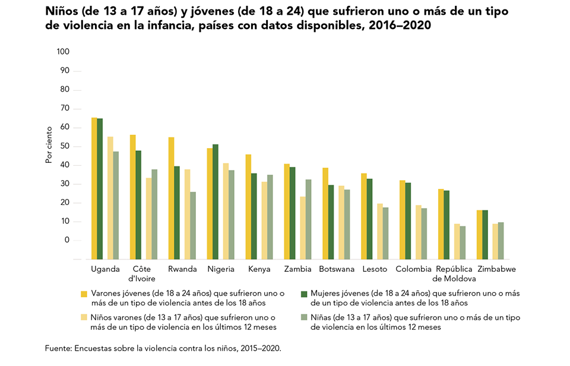

INTRODUCCIÓN
El abuso infantil es una problemática de salud pública global que afecta a millones de niños en todo el mundo. Se define como cualquier forma de maltrato físico, emocional, sexual o negligencia que afecta el bienestar y desarrollo de un niño. Este tipo de abuso puede ser infligido por padres, cuidadores u otras personas cercanas al entorno del niño, y tiene consecuencias devastadoras tanto a corto como a largo plazo.
Existen cuatro tipos principales de abuso infantil: el abuso físico, el abuso sexual, el abuso emocional y la negligencia. El abuso físico implica el uso de la fuerza para causar daño físico o dolor; el abuso sexual se refiere a cualquier forma de contacto o comportamiento sexual inapropiado con un niño; el abuso emocional implica palabras o acciones que dañan la autoestima y el bienestar emocional del niño; y la negligencia ocurre cuando los padres o cuidadores no satisfacen las necesidades básicas del niño, como la alimentación, el cuidado médico y la supervisión adecuada.
A nivel mundial, se estima que uno de cada cuatro niños (25%) experimenta alguna forma de abuso físico durante su vida, según la Organización Mundial de la Salud (OMS). Asimismo, uno de cada cinco niñas y uno de cada trece niños son víctimas de abuso sexual antes de cumplir los 18 años. En cuanto al abuso emocional, es difícil obtener estimaciones precisas debido a la naturaleza subjetiva de los comportamientos, pero se sabe que es una forma común y grave de maltrato que afecta a un número significativo de niños.
La negligencia infantil también es alarmantemente común. En países desarrollados como los Estados Unidos, se estima que el 75% de los casos reportados de abuso infantil están relacionados con la negligencia. En muchas ocasiones, la negligencia no es intencional, sino que surge de la falta de recursos o conocimiento por parte de los cuidadores. Sin embargo, las consecuencias para los niños son igualmente perjudiciales.

CONSECUENCIAS DEL ABUSO INFANTIL
Las consecuencias del abuso infantil son múltiples y afectan diversas áreas del desarrollo del niño. Los niños que han sufrido abuso o negligencia son más propensos a desarrollar problemas físicos, psicológicos, conductuales y sociales a lo largo de su vida. Entre los efectos más comunes están:
Problemas de salud mental: Los niños abusados tienen una mayor probabilidad de sufrir trastornos como depresión, ansiedad, trastorno de estrés postraumático (TEPT) y baja autoestima. También se ha documentado un mayor riesgo de intentos de suicidio.
Problemas de comportamiento: Los niños víctimas de abuso tienen una mayor tendencia a desarrollar conductas agresivas, problemas de manejo de la ira y comportamientos delictivos en la adolescencia y adultez.
También pueden involucrarse en comportamientos de riesgo, como el consumo de drogas y alcohol.
Dificultades académicas:
El abuso infantil está asociado con un menor rendimiento escolar y una mayor probabilidad de abandono escolar. Los niños maltratados a menudo tienen dificultades para concentrarse y mostrar interés en sus estudios debido al trauma que han experimentado.
Problemas de salud física:
Además de las lesiones físicas inmediatas que el abuso puede causar, los niños que han sufrido abuso también son más propensos a desarrollar problemas crónicos de salud, como enfermedades cardiovasculares, diabetes y obesidad en la vida adulta. El estrés tóxico generado por el abuso tiene un impacto duradero en el sistema inmunológico y metabólico del cuerpo.
Problemas en las relaciones interpersonales:
Los niños que han experimentado abuso o negligencia a menudo tienen dificultades para establecer relaciones saludables en la adultez. Pueden tener problemas de confianza y dificultades para formar vínculos afectivos seguros.
ESTADISTÍCAS GLOBALES
A nivel global, las tasas de abuso infantil varían significativamente según la región, la cultura y la definición de abuso en cada contexto. Sin embargo, se estima que aproximadamente 300 millones de niños entre 2 y 4 años de edad experimentan regularmente castigos físicos o agresiones psicológicas por parte de sus cuidadores. En los Estados Unidos, se informó que en 2020, aproximadamente 618,000 niños fueron víctimas confirmadas de abuso y negligencia. De ellos, el 76.1% experimentó negligencia, el 16.5% abuso físico, y el 9.4% abuso sexual.
En América Latina, las tasas de abuso infantil son también preocupantes. En países como México, un estudio realizado por la Organización para la Cooperación y el Desarrollo Económicos (OCDE) reveló que el 63% de los niños y adolescentes ha experimentado alguna forma de violencia dentro de sus hogares.
En Brasil, se estima que un niño es víctima de abuso sexual cada 15 minutos, y en Argentina, el abuso infantil afecta aproximadamente al 20% de los niños.
Factores de riesgo
Los factores que incrementan el riesgo de abuso infantil incluyen la pobreza, la falta de acceso a servicios sociales, la drogadicción y el alcoholismo por parte de los padres, y la violencia doméstica. El estrés parental es otro factor importante, ya que padres que experimentan estrés económico, laboral o emocional tienen mayor probabilidad de recurrir a comportamientos abusivos.
Prevención y tratamiento
Prevenir el abuso infantil requiere un enfoque integral que involucre a las familias, comunidades y gobiernos. Programas de apoyo familiar, intervenciones en crisis y educación sobre la crianza pueden reducir los riesgos de abuso. También es fundamental mejorar los servicios de protección infantil y fortalecer las leyes que previenen y sancionan el abuso.
En términos de tratamiento, los niños que han sufrido abuso pueden beneficiarse de una combinación de terapias psicológicas, incluyendo la terapia cognitivo-conductual (TCC) y el acompañamiento emocional. Además, es vital garantizar un entorno seguro y estable para que los niños puedan sanar y desarrollarse adecuadamente.
El abuso infantil es una tragedia que afecta no solo a las víctimas, sino a toda la sociedad. Con educación, concienciación y apoyo, se puede reducir la prevalencia del abuso infantil y mitigar sus devastadores efectos a largo plazo.
